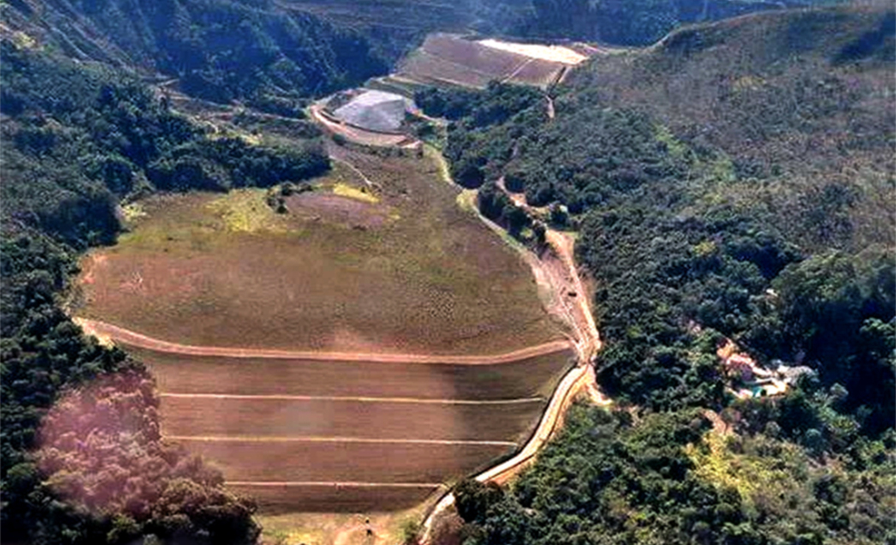
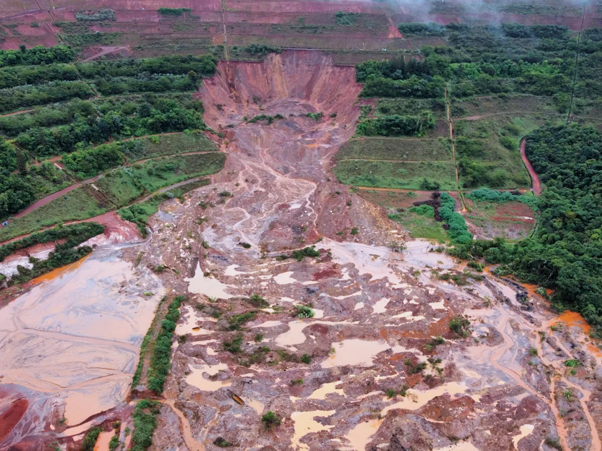
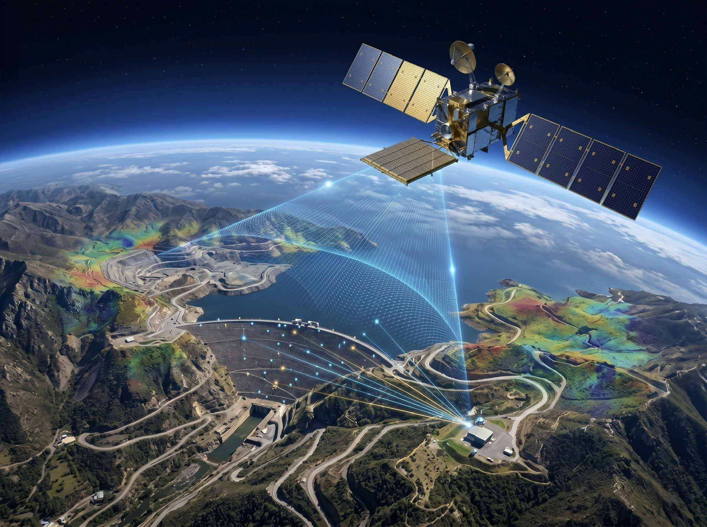
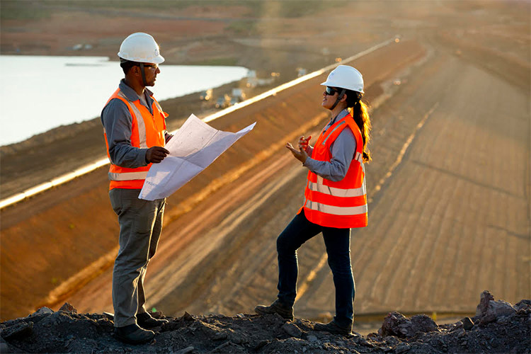

Monitoramento Visual
Acompanhe imagens do sistema Safe Earth.
Sentinela de Barragens
Prevemos o rompimento de barragens antes que ele aconteça, cruzando radar de satélite com sensores no solo.
"Não tocou nenhum alarme. Só que o aviso existia. Ele estava no espaço. E ninguém estava olhando."
Brumadinho, 25 de janeiro de 2019: 270 vidas perdidas.

Problema
O Brasil tem cerca de 850 barragens de mineração. Muitas não tem monitoramento confiável para prever um rompimento.
Em Brumadinho, o aviso existia mas ninguém viu. O rompimento matou 270 pessoas e era previsível.

Tecnologia
Usamos radar de satélite (InSAR, Sentinel-1), que mede a deformaçãodo solo com precisão de milímtros.
Sensores de baixo custo na barragem medem inclinação e umidade. Um programa em Python prevê o colapso.

Objetivos
Detectar sinais de rompimento com antecedência e transformá-los em um alerta claro, a tempo de evacuar.
Tornar o monitoramento acessível e ajudar mineradoras a cumprir a lei de segurança de barragens.

Público-Alvo
Tornar o monitoramento acessível e ajudar mineradoras a cumprir a lei de segurança de barragens.
Defesa Civil e comunidades próximas, que recebem o alerta e coordenam a evacuação.

Benefícios
Aviso com dias de antecedência, salvando vidas. Custo menor que os sistemas tradicionais de monitoramento.
Relatórios automáticos de compliance e mais segurança para empresas, trabalhadores e cidades vizinhas.

Aplicação no Dia a Dia
O sistema acompanha a barragem o tempo todo e mostra o nível de risco num painel simples.
Quando o risco sobe, dispara um alerta automático para a equipe e a Defesa Civil agirem.